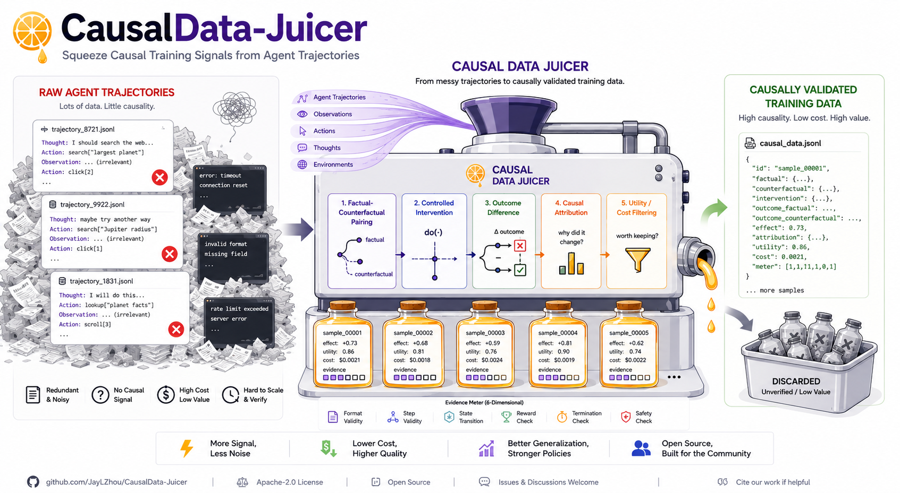

Agent failures in.
Certified training data out.
Logs tell you what happened — never what would have worked. CausalData-Juicer forks the exact state before a wrong step, tries candidate fixes for real, proves the control branch still fails and the fix flips the outcome — repeatedly — then bottles the result with an evidence tier on every row.

One loop, executed honestly
Every causal claim passes the same five stations — and the control gate refuses environments that drift, instead of certifying them.
restore the snapshot taken before the step in question
recorded actions must reproduce the failure, digest-for-digest
apply the intervention; downstream agents can re-react live
the verifier decides; flips must reproduce n / n
ddmin to the minimal cause, price it, export it
Three doors in
Nine papers, one skeleton
The branch-and-rollout family hand-builds the same loop per paper. Here it is as a library — see the showcase for all nine executed reproductions, from MCTS-style step-DPO (76 lines) to a June-2026 paper reproduced same-day (77 lines) to MAS message credit via reactive replay (85 lines).
We publish our nulls.
Our training-value pilot tied exactly — twice, at two data scales. It sits in the claims ledger beside the wins. The offline-verifiable core re-earns itself on your machine — and the scorecard names what it can't re-run (the GPU-hour sweeps), whose evidence ships as archived run directories instead. A skipped check is never shown as passed.